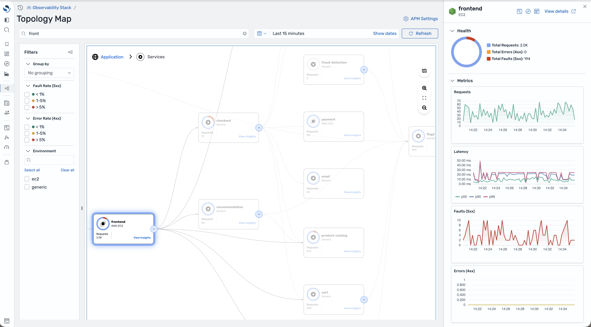
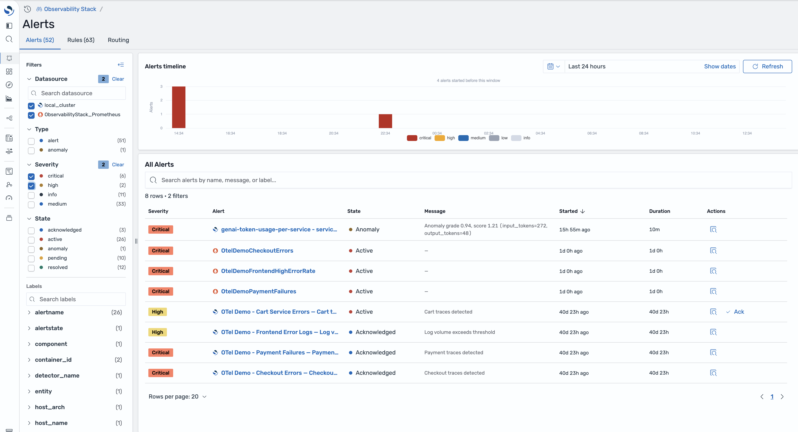

Standards First
OpenTelemetry + Prometheus, at every layer.
Dotan Horovits
Sr. Open Source Advocate @ AWS
CNCF & OpenSearch Ambassador
TAG Observability lead
Anirudha Jadhav
Sr. Software Engineering Manager @ AWS
OpenSearch Project
TAG Observability member
The bet
We stopped building adapters.
One CNCF standard per layer.
ingest
OTLP · one endpoint, three signals
schema
OTel semantic conventions
genai
GenAI normalizer, upstream in the Collector
metrics
Prometheus, as a datasource
query
PromQL, and PPL for text
alerts
Alertmanager, rendered not replaced
Ingestion
Five front doors. Now one.
was
Fluent Bit
Fluentd
Filebeat
Collector
remote write
→
One OTLP endpoint
logs · metrics · traces
→
OpenSearch
spans & logs · ppl
- log patterns
- log storage
- RED metrics
- default dashboards
- APM views & workflows
Prometheus
time series · promql
- metrics explorer
- PromQL builder
- unified dashboards
- multi-cluster datasources
kubernetes.labels.app
app_name
service
→
service.name
Metrics
Keep your Prometheus.
A datasource, not a migration.
datasource:
OpenSearch · logs & traces
Prometheus · prod-us-east-1
Prometheus · prod-eu-west-1
Prometheus · prod-ap-south-1
Multi‑cluster
many workspaces, one pane
Native PromQL
queried in place
Recording rules
derived · from logs
One time picker
shared variables


GenAI telemetry
Many standards. One normalizer.
Strands
LangGraph
CrewAI
OpenAI Agents
Bedrock
LlamaIndex
DeepEval
RAGAS
MLflow
pytest
↓
GenAI normalizer
contributed upstream · otel collector
→
gen_ai.* spans
one schema
→
Traces, tools, tokens, scores
same views, any framework
Normalization belongs in the pipeline, not in the store.
Learn more
Run it. Then come build with us.
opensearch.org/platform/observability-stack
meet us
The OpenSearch booth, KubeCon expo hall.